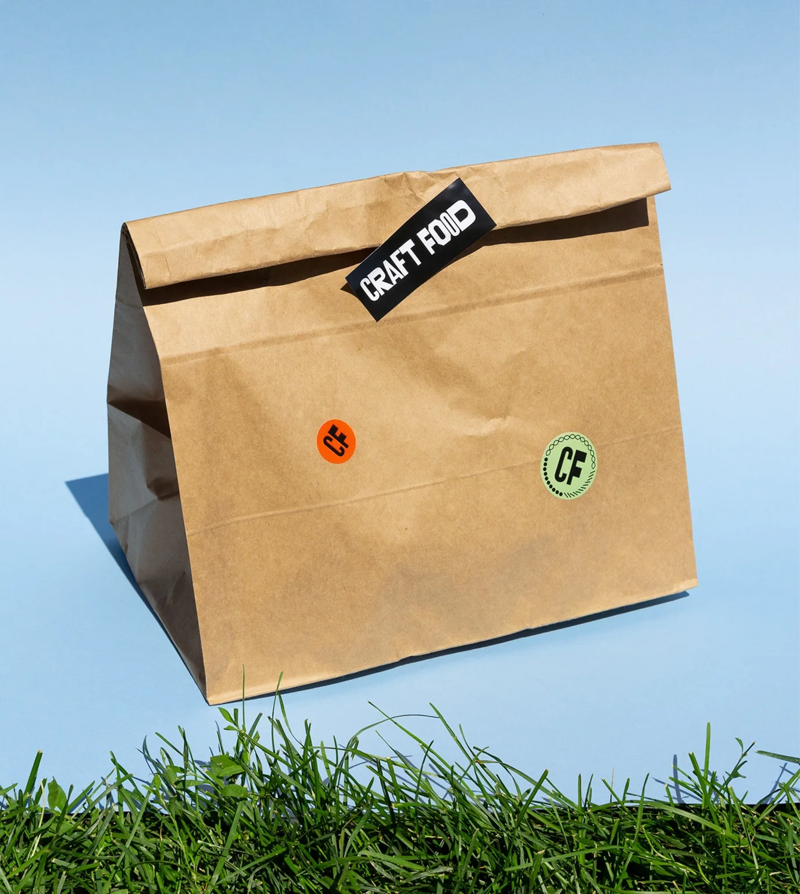
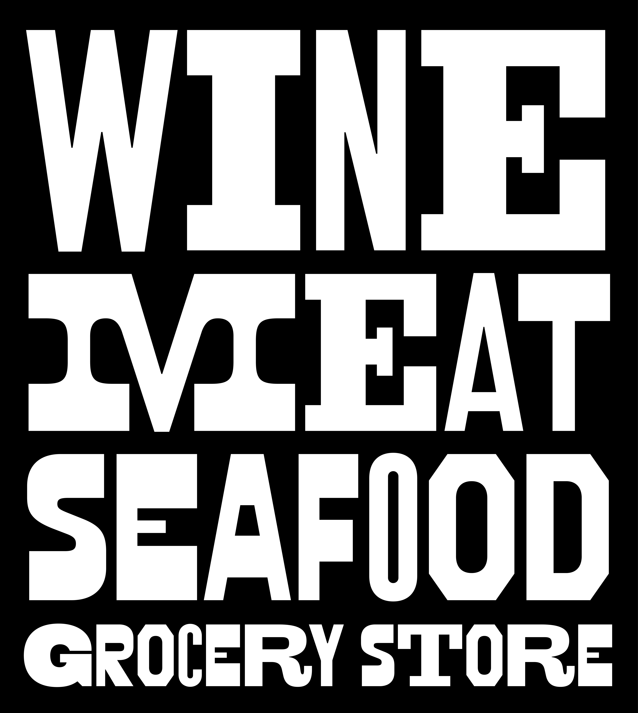
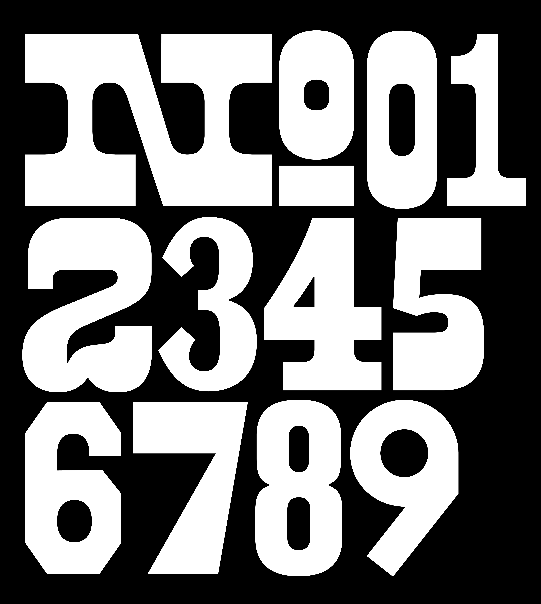
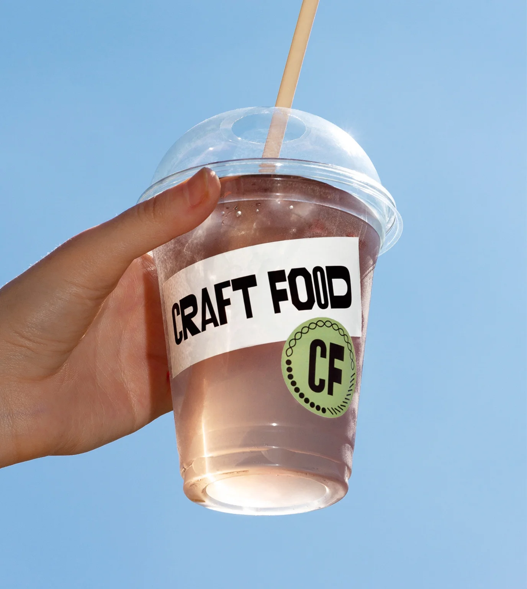
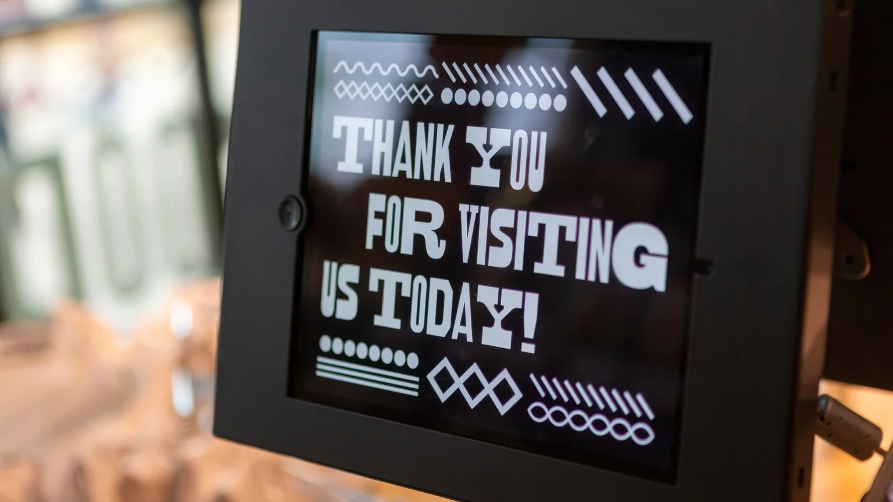

CraftFood is an Eastern European grocery store based in Plano, Texas. The project was built around the idea of introducing local audiences to Eastern European cuisine through a bold and highly recognizable visual language. ‖ The identity focuses on diversity — both cultural and visual — using typography as the central expressive tool across the entire brand system.


The custom typeface draws inspiration from American woodtype posters and vernacular printed typography. A key reference point was the imperfect nature of historical printing, where words were often assembled from mismatched letter sets due to limited physical resources. ‖ This accidental inconsistency created unique rhythms, textures, and unexpected visual combinations. That characteristic became the foundation of the typeface and the overall identity system.
To preserve this feeling throughout the entire alphabet, two alternate versions were developed for every character. Instead of repeating identical forms, the typeface constantly shifts between subtle variations, creating a more dynamic and organic texture in use. ‖ A custom OpenType feature was developed specifically for the project, allowing characters to alternate randomly while typing. This generates a less predictable composition and recreates the visual rhythm of vintage printed materials in a contemporary digital environment. ‖ The glyph set includes Basic Latin, numerals, punctuation, and a selection of additional symbols tailored specifically for the brand’s communication needs.

The custom typeface became the core element of the identity and appears
throughout both physical and digital touchpoints.
It is used across storefront signage, shop windows, packaging, receipts, printed materials, website interfaces, and social media communication, creating a consistent typographic voice throughout the entire customer experience.




Custom Typeface
Nikita Sapozhkov
Egor Golovyrin
Egor Golovyrin
Art Direction
Holystick Team